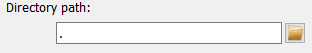

Directory spy frame#
The Directory spy frame is a graphical interface to configure and run the
DirectorySpyApp. It is split in two
main parts: On the left are the controls for configuring and running the
application. The right part of the frame is taken by a visualization widget for
the latest images read from the DirectorySpyApp.

The configuration on the left holds widgets to configure all necessary application Parameters as well as to start and stop running the actual application.
Configuring the input#
Data source#
The first Parameter the user must define is the working path for the app. Either copy the full directory path in the field or use the Open button to select a path in a pop-up window.

The default settings of the app is to scan for files corresponging to a specific file-naming pattern. An existing file can be selected using the Open button and its filename modified to exchange the counters in the filename with hashtags. An example of a filename with wildcards is given on the right. Note that the Hdf5 dataset key Parameter widget is also shown automatically if a hdf5 file extension was detected.

If the scan_for_all option has been selected, the filename pattern
Parameter will be hidded. Note that the Hdf5 dataset key Parameter is also
shown and this dataset is looked for in all new files in the specified folder.
Image corrections#

The Directory spy frame allows to mask the images with the global detector mask, toggled by changing the corresponding Parameter value.

In addition, a generic background image can be subtracted from all images. If this option is selected, the widget to select the filename is shown. If an hdf5 file was selected, the widgets for the selection of dataset and frame number are shown as well, see image on the right.
Running the App#

Running the DirectorySpyApp in this
frame will automatically display the latest update in the presentation widget
on the right.
A single directory scan can be performed by using the Show latest image button. This will also trigger a guaranteed update of the display widget.
A continuous process can be started by using the Start scanning button. This process will run until the pydidas UI is stopped or the Stop scanning button has been pressed. Updates to the display widget will be send based on the frequency set in the global settings.
Note
If a pattern has been selected, the app will perform a single scan of the whole directory upon starting to determine the latest image. To minimize file system access, it will then only look for the next consecutive file (and consequently, it will block if files are missing). To skip missing files, the user needs to restart the app.
Tip
The minimum frequency in which the plot is updated is defined in the global settings. Therefore, if two updates came back-to-back, pydidas will (depending on the settings) the second event and therefore will not show the latest image. A forced updated can be executed by using the Force plot update button.